I took photos of two different scenes, ensuring for each one that the transforms between photos were projective.
Here are two photos of the first scene:
| 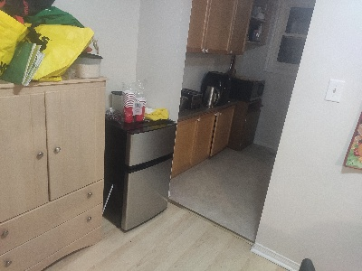 |
And here are three photos of the second scene:
| 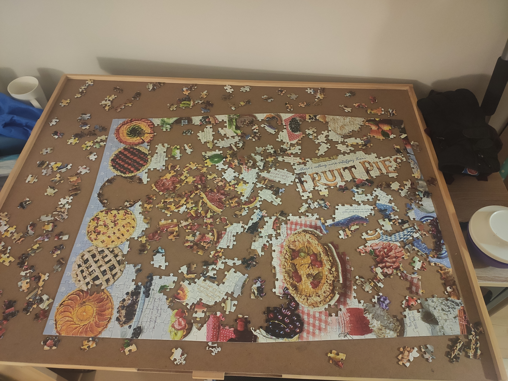 |
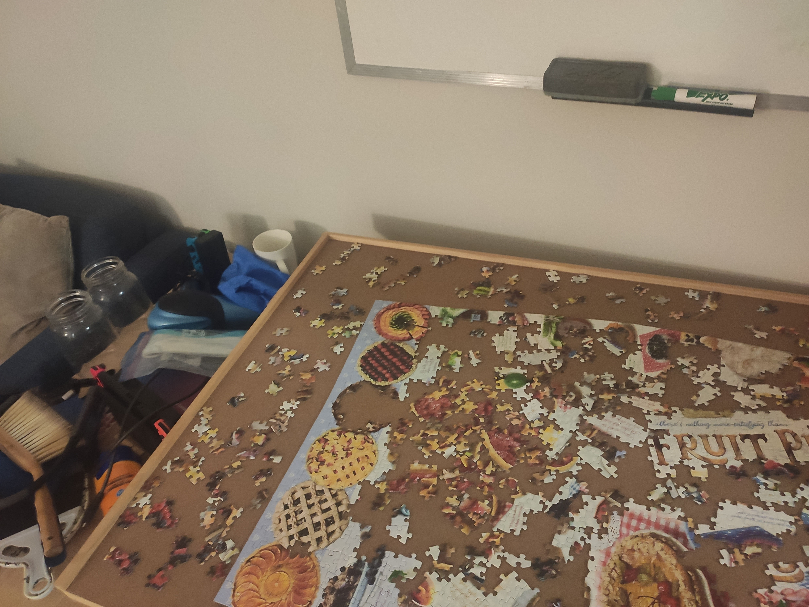 |
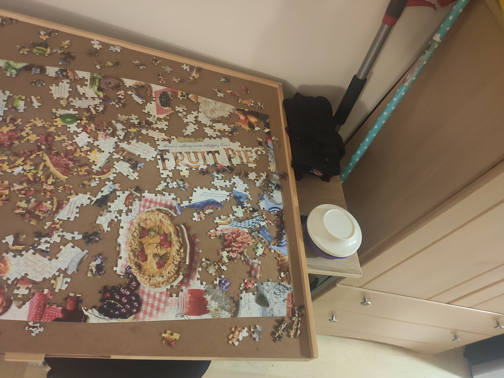 |
I picked 5 points to relate two images of the first scene. These point correspondences are shown below, highlighted in red.
| 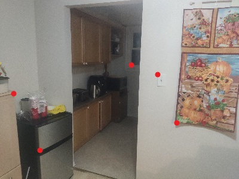 |
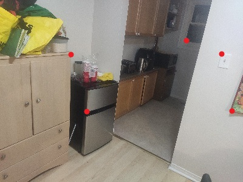 |
Using singular value decomposition, I obtained the least-squares solution to the overdetermined system relating each of the point correspondences. Here is the matrix equation relating the elements of H with the five point correspondences (x, y) and (x', y'):
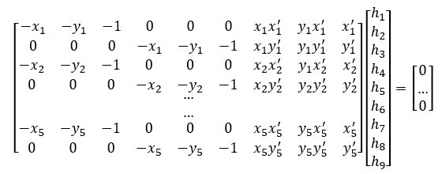
Solving this gave me the values for the homography matrix that maps points from the first image to the second image. The obtained matrix is as follows:
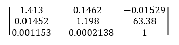
I used the recovered homography matrix to warp one image towards the other. For each output pixel coordinate, I used the inverse of the matrix to find the corresponding coordinate on the source image. Using one of either nearest-neighbour interpolation or bilinear interpolation, I obtained the RGB value of the source image at that point. Setting the output pixel to this value produced a warped image.
Below are the results for nearest-neighbour (left) and bilinear (right) interpolation. Bilinear interpolation looks slightly better, but it takes longer to compute.
| 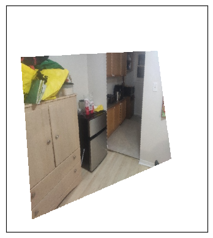 |
I created an image mosaic by blending the warped source image with the original destination image. Prior to warping, I created appended an alpha channel to each image. The alpha has a value of one in the center of the image, and it decreases proportionally to the distance from the center, reaching zero at the edge. Warping was performed using bilinear interpolation. After warping, the images were blended using a weighted average for each pixel corresponding to the alpha channel values.
The mosaic is shown below, blended without the alpha channels (left) and with the alpha channels (right). Using the alpha values significantly reduces edge artifacts.
| 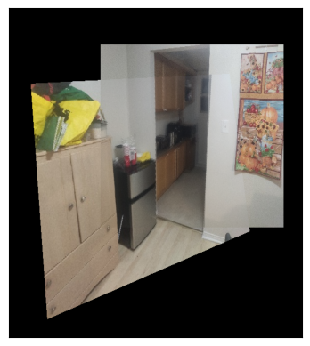 |
I used the Harris detector to identify corners, and selected a random subset of 400 them to use as features.
Below are the detected (left) and selected (right) corners.
| 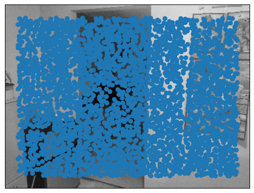 |
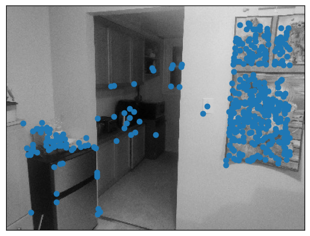 |
Features were extracted as 8x8 downsampled patches of 40x40 pixels. Below are two example features and the center locations of their patches marked in blue.
| 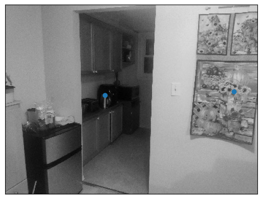 |
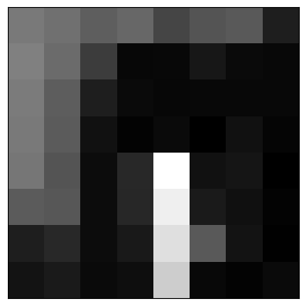 |
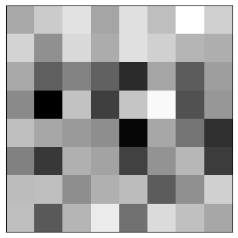 |
I compared eature vectors between the two images using the sum-squared error to find their first and second nearest neighbours. I filtered out features by thresholding the ratio of the first and second nearest neighbours. If the ratio was below 0.8, the feature and its nearest neighbour were kept as a likeley match.
The colour-coded matched feature locations are marked below.
| 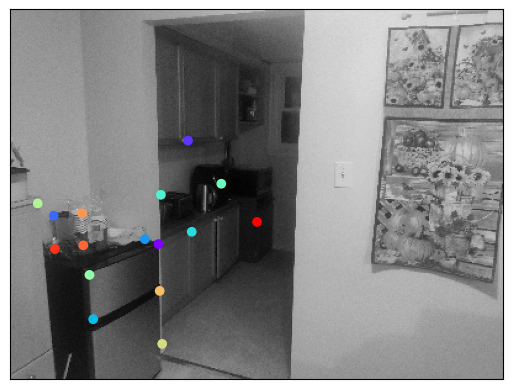 |
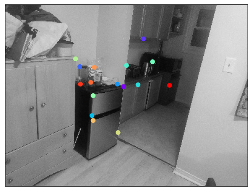 |
Below are three examples of these matched features, side-by-side.
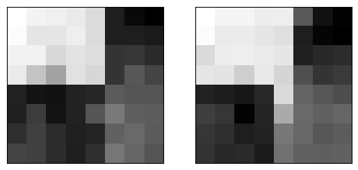
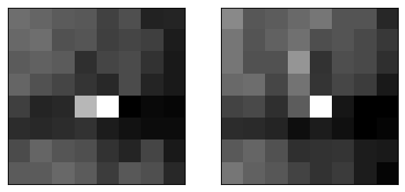
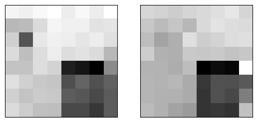
Four-point RANSAC was used to obtain the homography matrix. This algorithm randomly samples several groups of four correspondence point pairs, and identifies inlier points based on a threshold distance. I found a threshold distance of five pixels to work well. The group with the most inliers is used to compute the final homography matrix (with the inlier points included in the system setup).
With the homography matrix automatically obtained we can stitch the image using the warping and blending method as before. Below are the final results of autostitching (left) compared to the previously created manual mosaic (right).
| 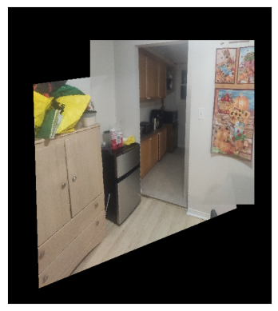 |
Using the same procedure, here is the autostitching for the second scene containing three images, with the original images shown again further below:
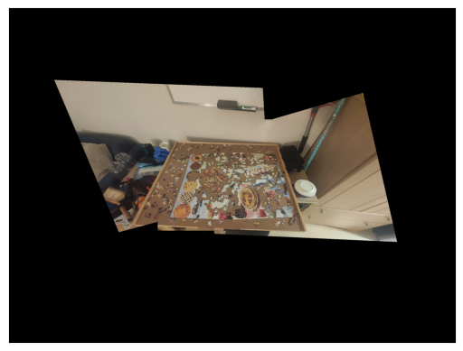